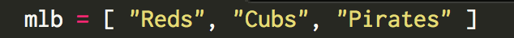
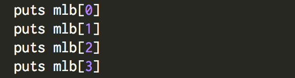
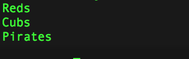
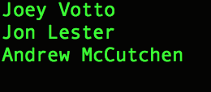

Arrays and hashes are two really cool ways to store information in Ruby. Whether you are looking to store a set of integers, strings, or floats.. hashes and arrays will be your choice. But what is the difference between them and how do we use them? In this blog, we will look at an example of a array and a hash and explain how they are used.
First, let’s talk about arrays.
Arrays.
To simplify things, an array is basically an ordered list on your computer. Let’s take a look at this array as an example:

You can see that we have called our array: mlb, and inside our array we have three strings, “Reds”, “Cubs”, and “Pirates”. All three of these strings are Major League Baseball teams, which would help explain why we named our array: mlb.
Now that we have created the array, we will need to look at the example below to see how we can go out and obtain the information we put into it. Something important to know about arrays is that they are indexed by integers.

Above, we see the name of our array: mlb, and we also see square brackets with numbers inside them? What is that exactly? This is what I meant by arrays being indexed by intgers. When we see the numbers [0], [1], [2], [3] next to mlb, we are simply assigning them to the array mlb. If we run this code, we will see it print out in order the same list of mlb teams we put in the array.
Take a look at this next example below to see what the output would look like:

Do you see how they were printed out in order: Reds, Cubs, Pirates, and an empty space(nil). When we called for the 0th index in the array, it found "Reds" because arrays start with 0 and count up. This is also why when we asked for the 1st index, we dont't get "Reds", but we get "Cubs". You also notice that when we called for the 3rd index, it couldn't find anything because we only had 3 strings in our array, not 4(0,1,2,3).
So now that you have a better understanding of what an array can you, let's move on to hashes.. What are they?
Hashes.
Just like an array, hashes are another way to store information, but while arrays were indexed by integers, hashes are indexed by other objects like strings and consist of key-value pairs. Let’s take a look this example of a hash:

You can see above that we have decided to call our hash mlb and inside this hash we are keeping track of each MLB teams best player. In key-value pair terms; our key is the MLB team, and our value is their best player.
Using the information that we just stored in our hash, we can now look up a teams best player. Let’s take a look at an example of how that is done:

You can see why it is important for us to use hashes in this type of example. Rather than trying to memorize each integer and where it was assigned(like we would have to do if this were an array), with a Hash we can just look at our key and call it with a string.
Finally, let’s see what happens when we run our program:

Just like we expected, it found the best player for each team that we called for: Joey Votto["Reds"], Jon Lester["Cubs"], and Andrew McCutchen["Pirates"]. You may have also noticed that when we called for mlb[“Cardinals”], it printed out an empty space(nil). This is because we have not yet added our sting “Cardinals” to the hash. It went out looking for their best players, but couldn't find anything, which is why it returned nil.
It also might have returned nothing because the Cardinals have no good players.. but this is coming from a Reds fan.